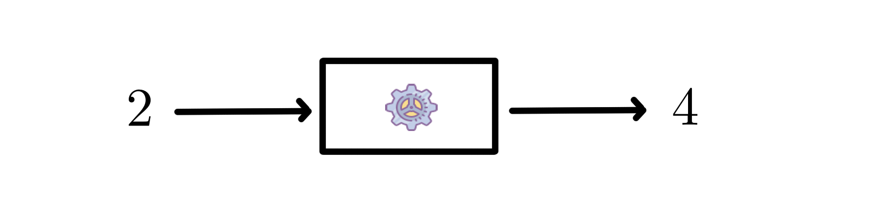
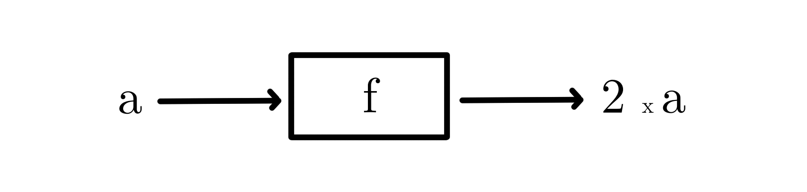
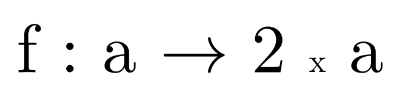

Une fonction est une sorte de machine à nombres...
Aujourd'hui je vous emmène visiter une sandwicherie! Vous dîtes bonjour au gérant de l'entreprise qui vous met face à une imposante machine à faire des sandwichs aux oeufs. Voici comment elle fonctionne:

Le pain et les oeufs rentrent dans la machine et la machine transforment les ingrédients selon un certain nombre d'opérations (probablement imposées par une recette).
Il en va exactement de même pour une fonction. Une fonction peut être vue comme une sorte de machine à nombres. Les ingrédients qui rentrent dans cette machine sont des nombres et la fonction (la machine) transforment ces nombres selon un certain nombre d'opérations (imposées par une recette). Il en ressort alors d'autres nombres.
Prenez par exemple cette machine à nombre (c'est-à-dire, cette fonction):
On lui donne le nombre 2 en ingrédient (en entrée) et il en ressort 4... Essayons de lui donner un autre nombre!

On lui donne le nombre 3 en ingrédient (en entrée) et il en ressort 6... Essayons de lui donner encore un autre nombre!

Que remarque-t-on? Prenez un temps pour réfléchir avant de lire ce qui suit...
Réponse: cette machine nous donne à chaque fois le double du nombre qu'on lui donne en entrée (en ingrédient)! On pourrait ainsi lui donner beaucoup d'autres nombres en entrée: 5, 6, 7, 8... Il en ressortirait à chaque fois le double: 10, 12, 14, 16... Etc.
De manière générale on peut alors représenter le fonctionnement de cette machine à nombre comme ceci:

La lettre 'a' signifie que peut importe le nombre qu'on lui donne en entrée il en ressort toujours 2 fois 'a', c'est-à-dire 2 fois le nombre qu'on lui donne en entrée (c'est-à-dire le double).
On peut maintenant donner un petit nom à cette machine, on va l'appeler 'f'!
Et comme on risque de beaucoup travailler avec les fonctions il est plutôt désagréable de toujours dessiner des boîtes et des flèches. On va utiliser une écriture plus courte mais qui dit exactement la même chose que notre dernier schéma ci-dessus:
Cette écriture peut se lire comme ceci: la machine 'f' prend n'importe quel nombre 'a' en entrée et en ressort toujours 2 fois 'a'.
Ou de manière plus mathématique on lit: la fonction 'f' qui associe à 'a', 2 fois 'a'.